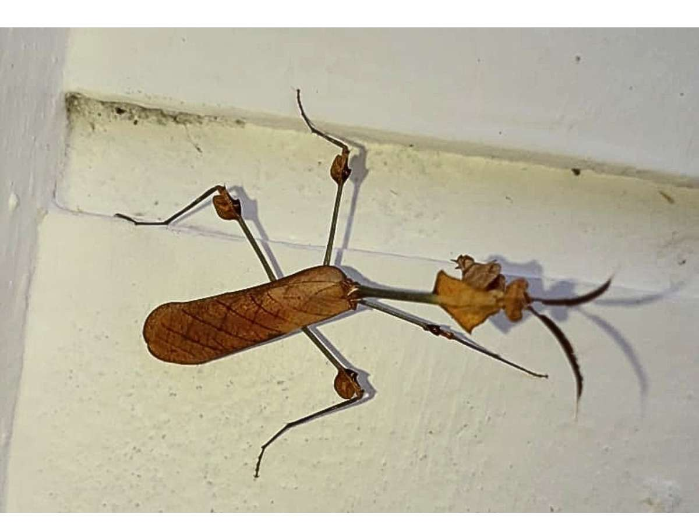
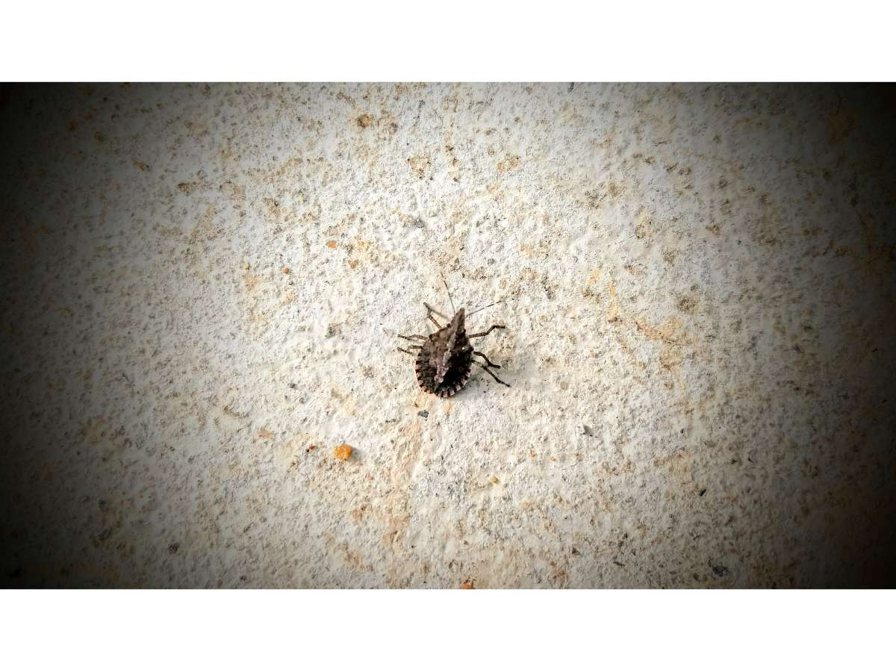
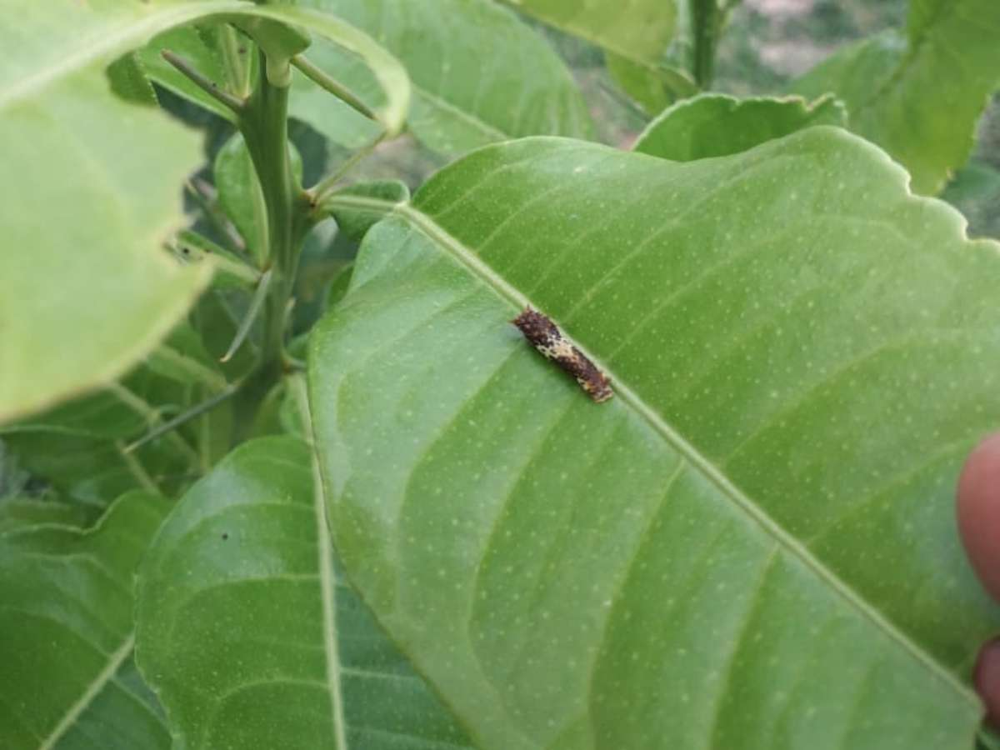
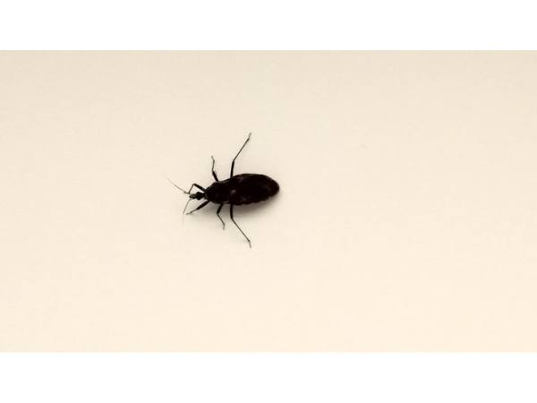
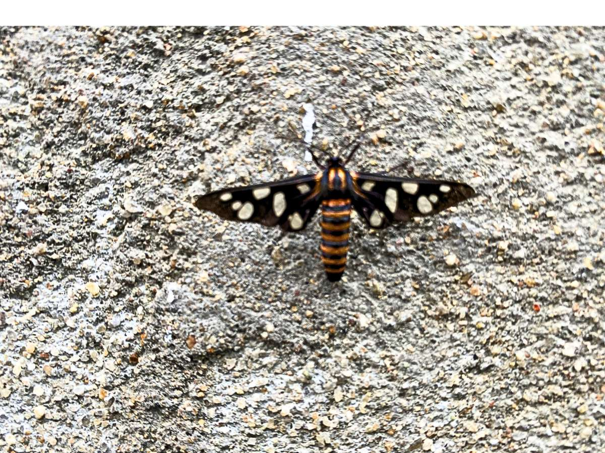
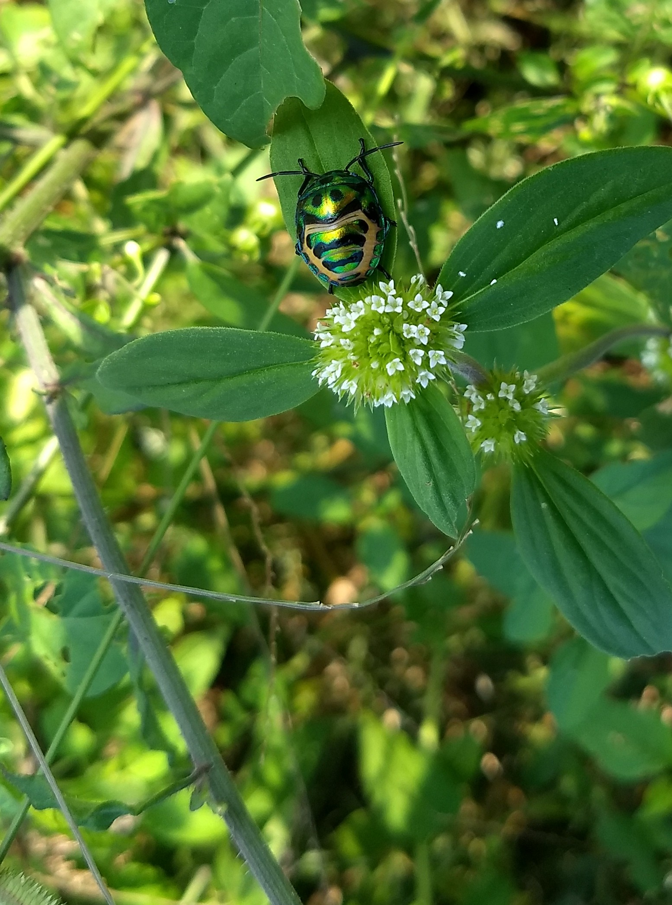
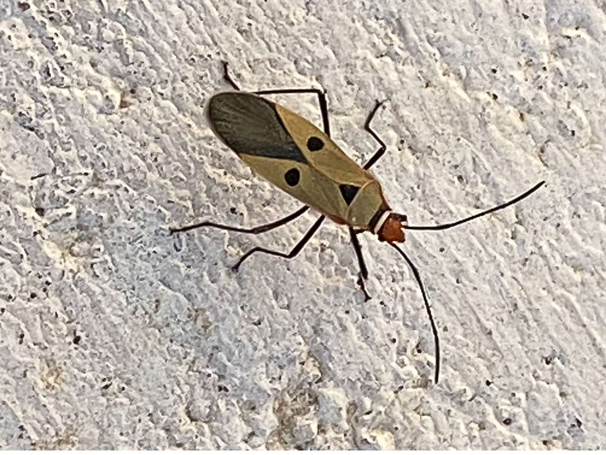
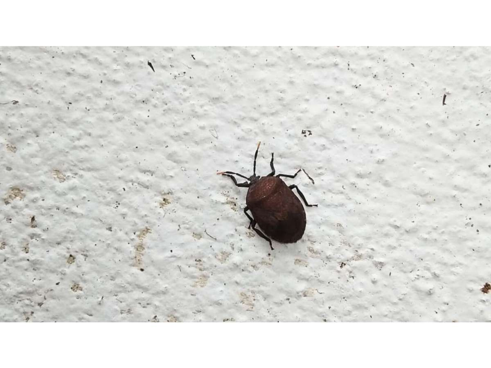

🦋 Insects & Pollinators
Butterflies, bees, beetles, dragonflies, and other insects observed at ArkFarm.

Wandering Violin Mantis
Gongylus gongylodes
✅ Beneficial ⚠️ Low Risk
Ambush predator that controls pest insects with remarkable camouflage.

Brown Marmorated Stink Bug
Halyomorpha halys
🚨 Pest 🌍 Invasive
Invasive pest that damages fruit crops by piercing and feeding.

Speckled Bush Cricket
Leptophyes punctatissima
🔵 Neutral 🌿 Ecosystem Indicator
Nocturnal cricket; indicator of a healthy low-pesticide orchard.

Lime Butterfly
Papilio demoleus
🚨 Pest (Larva) ✅ Pollinator (Adult)
Larvae defoliate citrus; adults are important pollinators.

Red-spotted Assassin Bug
Triatoma rubrofasciata
🔵 Beneficial Predator 🩸 Do Not Handle
Controls pest insects; delivers a very painful bite if disturbed.

Sandalwood Defoliator Moth
Amata passalis
🚨 Pest
Day-flying wasp moth whose larvae defoliate sandalwood and pulse crops.

Lychee Shield Bug
Chrysocoris stollii
🚨 Pest
Brilliantly coloured jewel bug that feeds on pigeon pea, pongamia, and other crops.

Red Cotton Stainer
Dysdercus cingulatus
🚨 Pest
Serious pest of cotton that stains lint by transmitting fungi while feeding.

Brown Stink Bug
Euschistus servus
🚨 Pest
Shield-shaped pest that damages fruit, grain, and nut crops by piercing and feeding.